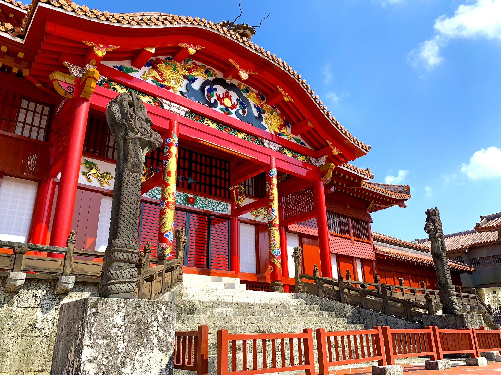

首里の誕生
広厳寺・普門寺・天龍寺
尚泰久王は、1450年に京都の南禅寺から渡った芥隠承琥に深く帰依し、芥隠を開山として広厳寺・普門寺・天龍寺を建てた。いずれも現存しない。
天界寺
尚泰久王が景泰年間に創建したとされる。開山は、万国津梁の鐘の銘文を書いた渓隠安潜である。尚徳王代の1466年に大宝殿が建てられ、1469年銘の梵鐘も掛けられた。
『李朝実録』によると、尚泰久王の命で1455年に朝鮮へ渡った僧・道安が経典を求め、のちに大蔵経が与えられた。1461年の条に「天界禅寺を建立した」とあり、大蔵経の入手と寺の建立は結び付いていたと考えられている。
のちに尚家の未婚の王子・王女を祀る寺となり、円覚寺・天王寺とともに首里三ヵ寺の一つに数えられた。明治後期に廃寺となり、跡地は首里城公園の管理センター付近にあたる。
琉球の相国寺
首里にあった臨済宗の寺で、京都の相国寺と同じ名前を持つ。1458年の万国津梁の鐘の銘は、末尾に「住相國溪隠叟誌之」とあり、この寺の住持だった渓隠が書いたことが分かる。
中国の年号を刻んだ和鐘
琉球の鐘はいずれも中国の年号を刻んでいるが、形は日本の和鐘である。現存する12口のほとんどは、尚泰久王の1456年から尚真王の1495年までの39年間に造られた。文化庁の解説は、この時期を琉球の仏教の最盛期としている。
1458年の万国津梁の鐘の銘には、王が「三宝を興隆し、四恩に報いる」ために鐘を鋳させたとある。前年の1457年、尚泰久王は朝鮮から大蔵経を取り寄せていた。
鋳物師は日本本土の人々であった。15世紀半ばの琉球の鐘には豊前や筑前の鋳物師が手がけた例があり、その背景には周防を本拠に北九州も支配した大内氏と琉球の関係があったと指摘されている。
天王寺
第二尚氏の始祖・尚円王が、王位に就く前の自らの邸宅跡に建てたといわれる。尚真王の生誕地とされる。のちに王妃を祀る寺となった。
現在は日本基督教団首里教会となっており、入口付近に天王寺の石垣が残る。
円覚寺
尚真王が父・尚円王の追福のため、1492年に首里城の北側で工事を始め、1494年に完成した。開山は芥隠承琥。鎌倉の円覚寺を模した琉球随一の禅寺で、王府三大寺の筆頭として天界寺・天王寺を従え、庶民からは「大寺（うふてぃら）」と呼ばれた。
総門から放生池・三門・仏殿・龍淵殿が一直線に並び、奥に行くほど土地が高くなる配置であった。円覚寺前の円鑑池には経堂（のちの弁財天堂）が建てられ、朝鮮国王から贈られた方冊蔵経が納められた。
1495年、周防国防府の鋳物師大和相秀が円覚寺の殿前鐘・殿中鐘を鋳た。相秀は前年、大内氏の氏寺・興隆寺の鐘も鋳ている。沖縄戦で焼失し、現在は総門などが復元されている。
首里三ヵ寺
国王は円覚寺、王妃は天王寺、未婚の王子・王女は天界寺に祀られた。国王の元服や即位の際には三ヵ寺を巡るのが習わしとなった。
禅僧と対日外交
芥隠承琥は、長く琉球にとどまって王府の顧問として日本との貿易・外交に携わった外交僧の代表とされる。16世紀の大内氏の書状には、琉球側が天王寺を使者として将軍に直接伝えたという記述があり、首里の禅寺が対日外交の窓口となっていたことがうかがえる。
このことから、首里の寺は宗教施設であると同時に外交と学問の拠点でもあったとする研究者の見方がある。
首里城の外港だった那覇は、もとは浮島と呼ばれる島だった。1451年に長虹堤で首里と陸続きになり、近世から近代にかけての埋め立てで今の形になった。古い海岸線を現在の地図に重ね、透明度を変えて見比べることができる。
図灰色の部分の多くは近世〜近代の埋立地。重ね合わせは波上宮・崇元寺・奥武山を基準にした推定で、数十メートルのずれがある。地図をクリックすると矢印キーでも位置を動かせる。出典：古地図「旧那覇の海岸線」／地図：国土地理院 地理院タイル、© OpenStreetMap contributors